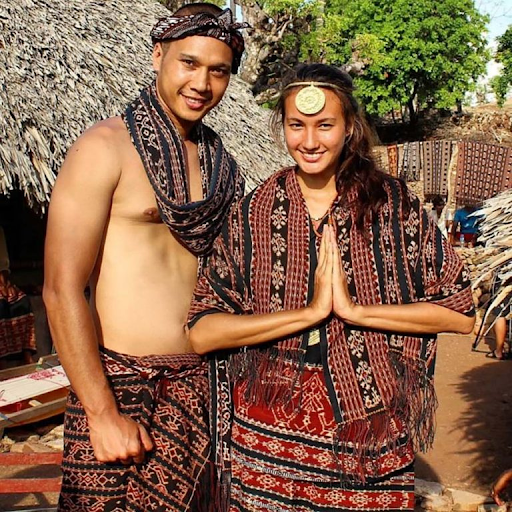

Kesenian di Nusa Tenggara Timur
1. Pakaian Adat Suku Rote
Suku Rote merupakan suku yang bermigrasi dari pulau Seram, Maluku, menuju ke pulau Rote. Sekarang mereka menjadi penduduk asli pulau tersebut. Selain itu, suku Rote juga mendiami beberapa pulau lain seperti pulau Timor, pulau Pamana, pulau Ndao, pulau Manuk, pulau Heliana dan pulau Landu. Suku Rote memiliki pakaian adat yang disebut tenun ikat. Pakaian ini mempunyai model yang unik serta sejarah dan nilai filosofis yang tinggi. Karena itu, pakaian adat suku Rote digunakan sebagai ikon daerah Nusa Tenggara Timur. Awalnya, pakaian adat suku Rote terbuat dari serat-serat pohon. Namun, seiring dengan perkembangan zaman, masyarakat suku Rote mengganti bahan pakaian mereka dengan kain kapas. Mereka memanfaatkan lahan-lahan di sekitar rumah untuk menghasilkan kapas yang kemudian diolah menjadi kain kapas..
2. Pakaian Adat Suku Dawan
Suku Dawan merupakan suku yang tinggal di beberapa wilayah di Nusa Tenggara Timur seperti Kupang, Timor dan Belu. Masyarakat suku Dawan mempunyai pakaian adat yang bernama Amarasi. Baju Amarasi ini terdiri dari beberapa komponen, mulai dari kebaya, selendang yang dipakai untuk menutupi bagian dada serta sarung tenun untuk bawahan.
3. Pakaian Adat Suku Helong
Suku Helong adalah suku yang mayoritas penduduknya berasal dari pulau Timor. Masyarakat suku ini kebanyakan tinggal di wilayah Kupang Tengah dan Kupang Barat. Namun, ada juga yang dapat dijumpai di pulau Flores dan Pulau Semau. Pakaian adat suku Helong terbagi menjadi dua jenis, yaitu pakaian adat khusus wanita dan pakaian adat khusus laki-laki. Biasanya, masyarakat suku Helong menggunakan pakaian adatnya dalam acara-acara adat..
4. Pakaian Adat Suku Sabu
Suku Sabu adalah salah satu kelompok etnis yang tinggal di pulau Sawu dan pulau Raijua, Nusa Tenggara Timur. Masyarakat suku Sabu mempunyai pakaian adat yang terbagi menjadi dua jenis yaitu pakaian adat khusus pria dan pakaian adat khusus wanita.
5. Pakaian Adat Suku Sumba
Suku Sumba adalah suku yang tinggal di Pulau Sumba Sumba Nusa Tenggara Timur. Suku ini mempunyai pakaian adat yang bernama Hinggi. Hinggi yang digunakan ini terdiri dari dua lembar, yaitu Hinggi Kombu dan Hinggi Kawuru.
6. Pakaian Adat Suku Lio
Suku Lio adalah suku tertua yang berada di Flores, mereka bisa ditemui di Kabupaten Ende, Nusa Tenggara Timur. Suku ini salah satu suku yang sangat memegang teguh tradisi dan budaya warisan para leluhur, termasuk pakaian adatnya. Masyarakat suku Lio mempunyai pakaian adat yang hingga saat ini masih dilestarikan bernama Tenun Ikat Patola. Ikat patola sendiri merupakan kain tenun yang dipakai secara khusus oleh kepala suku dan warga kerajaan. Pakaian adat ini mempunyai ciri khas motif yang beragam seperti motif hewan, dahan, dedaunan, ranting hingga motif manusia. Ukurannya terbilang kecil dengan bentuk geometris yang disusun membentuk jalur-jalur berwarna biru atau merah yang didasari kain berwarna gelap. Motif-motif tersebut ditenun dengan menggunakan benang berwarna merah atau biru pada kain yang berwarna gelap. Wanita dari kalangan bangsawan biasanya menambahkan manik-manik atau kulit kerang sebagai hiasan pada bagian tepinya..
7. Pakaian Adat Suku Manggarai
Manggarai merupakan suku yang tinggal di wilayah Nusa Tenggara Timur. Mereka mempunyai pakaian adat dengan nilai filosofis tinggi, yaitu kain Songke. Kain Songke adalah kain yang wajib digunakan oleh para wanita suku Manggarai dengan cara pemakaian yang mirip seperti sarung. Akan tetapi, pemakaiannya tidak boleh dilakukan secara sembarangan sebab ada beberapa bagian yang harus menghadap ke arah depan. Kain Songke didominasi oleh warna hitam yang melambangkan keagungan dan kebesaran suku Manggarai. Selain itu, ada juga motif-motif lain pada kain Songke, masing-masing motif mempunyai makna yang berbeda-beda.
8. Pakaian Adat Suku Sikka

Suku Sikka merupakan sebuah komunitas adat yang tinggal di Kabupaten Sikka, Flores Timur Tengah, Pulau Flores, Nusa Tenggara Timur. Suku Sikka memiliki pakaian adat yang sudah terpengaruhi oleh budaya luar, seperti Bugis, Portugis, Cina, Belanda, Arab, dan India. Pakaian adat suku Sikka dibagi menjadi dua jenis, yaitu pakaian adat khusus wanita dan pakaian adat khusus laki-laki. Dulu, pakaian adat suku Sikka dibedakan berdasarkan tingkatan sosial, yaitu bangsawan dan masyarakat umum. Namun sekarang, tradisi ini sudah ditinggalkan sehingga tidak ada lagi perbedaan dalam pakaian adatnya. Kecuali pada tingkat kehalusan tenunan, jahitan, dan juga ukiran perangkat perhiasannya.